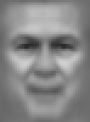

1. Linear Combination Face Reconstruction
A human face ($\mathbf{x} \in \mathbb{R}^{1850}$) is approximated as the average face ($\boldsymbol{\mu}$) plus a weighted sum of $K$ orthogonal eigenfaces ($\mathbf{v}_k$):
\hat{\mathbf{x}}_K = \boldsymbol{\mu} + \sum_{k=1}^K w_k \mathbf{v}_k
George W. Bush
In scikit-learn Training Set (530 images)43rd President of the United States
Comprises over 41% of the entire scikit-learn training set.
K):
20 components
Active Projection Weights ($w_k = (\mathbf{x} - \boldsymbol{\mu}) \cdot \mathbf{v}_k$) for Top Components
Positive weights (cyan) add features; negative weights (amber) invert them2. Eigenface Feature Mixer & Face Generator
Manipulate the projection weights ($w_1 \dots w_6$) directly to see what features each principal component controls, or synthesize brand new hypothetical faces!
Custom linear combination of eigenfaces generated in real-time.
3. Eigenface Basis Gallery (Top 16 Components)
Each eigenface $\mathbf{v}_k$ is an eigenvector of the facial pixel covariance matrix. They capture correlated structures like lighting angles, face width, and shadow gradients.

4. Data Skew & Representation Disparity
Why does PCA reconstruct George W. Bush effortlessly while underrepresented demographics suffer high error? The mathematical consequence of training on biased distributions.
Visual Proof: Reconstructing In-Distribution vs Out-of-Distribution Faces at $K = 20$
Observe how out-of-distribution faces are washed toward the Western male mean face and carry significantly higher residual error.
Generalization Gap: Mean Squared Error (MSE) vs Number of Components ($K$)
5. Mathematical Principles & Ethical Takeaways
Essential concepts for Machine Learning, Linear Algebra, and Data Ethics students
📐 How Does PCA Turn 1,850 Pixels into Recognizable Faces? ▼
Every 50×37 image is a vector in an 1,850-dimensional space ($\mathbb{R}^{1850}$). However, random vectors in this space look like TV static—not faces! Real faces occupy a much lower-dimensional manifold because facial pixels are intensely correlated (both eyes share illumination, cheekbones reflect light symmetrically, noses cast structured shadows).
PCA computes the eigenvectors of the centered data covariance matrix:
The top eigenvectors (the Eigenfaces) are the directions of maximum variance. Projecting a face onto just 20 to 50 of these orthogonal vectors captures up to 86%–89% of all facial variation, achieving a 37× to 92× compression ratio.
🌍 Why Does Training Skew Cause Representation Disparity? ▼
PCA is an unsupervised optimization problem that minimizes the sum of squared reconstruction errors across the training distribution:
If 41% of the training images belong to George W. Bush and over 88% belong to White Western men, the eigenvectors $\mathbf{v}_k$ will naturally specialize in the directions of variance that matter for that specific demographic (e.g. Western eye sockets, receding hairlines, and European skin tones under Western press flashbulbs).
When evaluated on faces from underrepresented groups (women, non-white ethnicities, indigenous peoples), the basis lacks the specific orthogonal components needed to span their facial features. Consequently, their early reconstructions default to the Western mean face $\boldsymbol{\mu}$, leading to higher error, feature loss, and biased downstream facial classification.
📜 Historical Context: Turk & Pentland (1991) to Modern Facial Recognition Audits ▼
The Eigenface method was pioneered by Matthew Turk and Alex Pentland at MIT in 1991 ("Eigenfaces for Recognition", Journal of Cognitive Neuroscience). It was the first practical real-time face recognition system.
Decades later, Joy Buolamwini and Timnit Gebru published their landmark study "Gender Shades" (2018), auditing modern commercial deep learning face recognition systems. They demonstrated that error rates were below 1% for lighter-skinned men, but reached up to 34.7% for darker-skinned women. The root cause was identical to what you see in this demo: training datasets that were heavily skewed toward Caucasian men from developed nations.